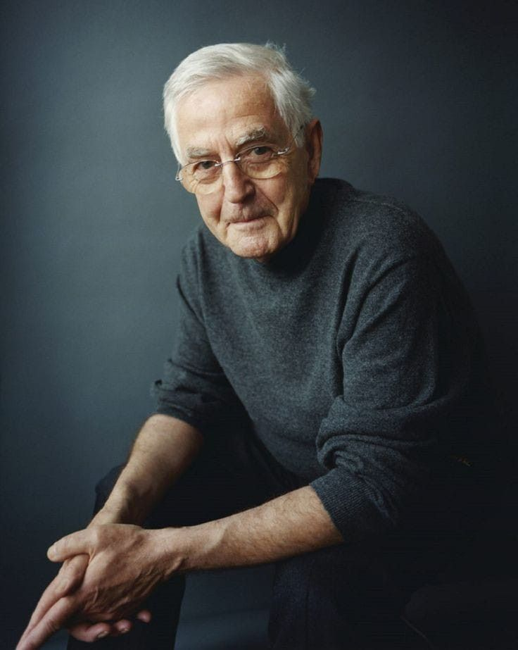

Reto mayor
El reto principal fue trabajar de forma colaborativa con estudiantes de creación digital y diseño de comunicación, quienes estaban enfocados en la narrativa y en la propuesta visual del proyecto. Esto implicó alinear ideas para construir una experiencia coherente entre historia, diseño y funcionalidad.
"Con solidaridad y unión podemos transformar el hambre en esperanza."
— Todos juntosSolución
Se diseñó una página web interactiva ajustando los gráficos para generar una conexión más infantil y emocional. Se construyó una narrativa que envolviera al usuario en una historia clara y significativa.
El objetivo no era solo lograr un diseño visual atractivo, sino crear una experiencia que transmitiera un mensaje de impacto social, fomentando la empatía y la acción colectiva para generar un cambio positivo.
Mi rol
Como diseñador UI/UX participé en el desarrollo del proyecto, liderando la parte visual y colaborando con Andrés Castañeda y Valentina Torres en la definición de la experiencia y el funcionamiento de la plataforma.
Resultados
Fue un template puesto a disposición de la carrera para llegar a hacer uso de esta.
Se demuestro que el trabajo entre diferenters carreras es posible.
WebflowTestimonios
Ana es una diseñadora increíble, muy enfocada en UX y detalles.

Su trabajo es limpio, profesional y muy creativo.

Gran capacidad para resolver problemas de UX.
Muy buena comunicación y diseño moderno.
Excelente en investigación de usuarios.

Entrega proyectos muy bien estructurados.
Muy detallista y organizada en su trabajo.
Altamente recomendada para proyectos UX/UI.